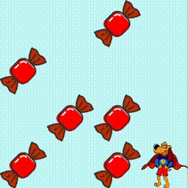

In the past few weeks, I have been working on a game. I used the coding language 'Python' to write the
code for the game. I also used Pygame, a handy tool for making games within Python. Pygame is a
convenient tool for computer graphics and sound systems.
Code for my Pygame game is in this Git Hub
Repository.

The evidence provided is a git hub link containing the working code with assets needed to run the
game—also, I have included a proof of the game working in the form of a gif.
To complete the Pygame task, I loosely followed a guide to create the game. I added all the code from the
guide and completed the extension parts, including an eating sound and more candies spawning every few
seconds. The original code needed some things added. For one thing, the player could walk off the edge
of the game. I fixed this in my version by not letting the movement input register if it would lead the
character off the screen. Another thing I added was allowing the 'wasd' keys, not just the arrow keys,
to move the character around. After I was happy with my game, I changed all the supplied assets,
including adding a player, a candy sprite, a new eating sound effect and a new colour background.
Once I finished the game, I moved on to an online "textbook" covering many Pygame fundamentals. For these
weeks, it was assigned to cover two textbook chapters. One thing I found most interesting about the
textbook was that you could use pygame in 3d by importing the Blender engine; this is cool to me because
I have used Blender and enjoyed how the engine worked.
I've been using Git Hub to store all my code and found it to be an incredibly helpful tool for sharing my
work. One feature I particularly like is the ability to add tags, which allows me to easily set a
timestamp and showcase my progress at specific points in time. Git Hub is also great for sharing code -
in the past, I would use screenshots and photos to demonstrate my work, but now my blogs are much
cleaner. The best part is that anyone can copy and clone the code to their local repository and try it
out themselves, complete with all the necessary assets for the game to work.